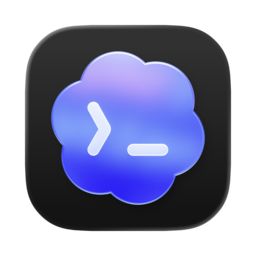
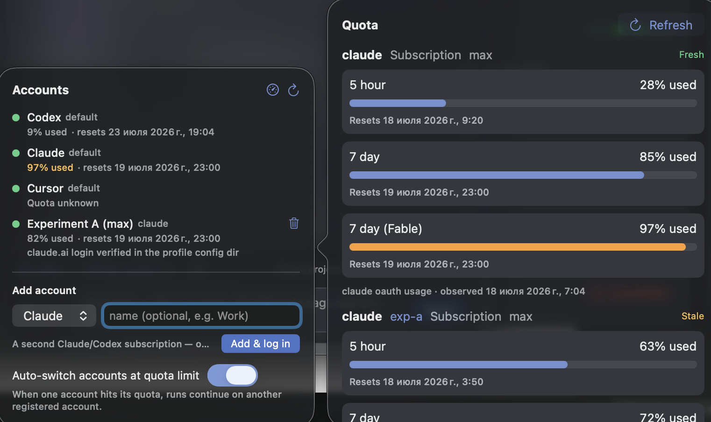
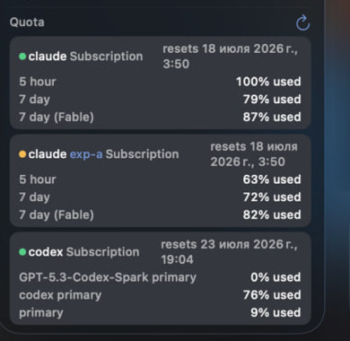
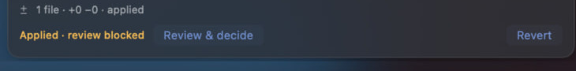

Claude Code · primarylimit reached
Local-first control plane
Multi-subscription. Multi-harness.
Keep coding when a subscription hits its limit.
Claudexor keeps one coding thread moving across Claude Code, Codex, Cursor, and OpenCode. Add multiple Claude Code and Codex subscriptions; it tracks real quota, rotates profiles on typed limits, and carries bounded continuation context into the next lane.
Signed & notarized DMG · MIT · no telemetry
Quota router
One thread, ready to continue
Local
typed limitrotate
Claude Code · workactive
Codex · personalready
Continuation packet attachedthread intent · recent turns · evidence
opt-in
Orchestrates the coding agents you already use
Claude Code

Codex
Cursor
OpenCode
01 · Quota-aware rotation
Your subscriptions become a pool, not a pile of logins.
Each Claude Code and Codex profile keeps its own isolated vendor login. Claudexor reads the available subscription windows, routes toward headroom, and rotates only on a typed limit or proactive headroom breach — never on an ordinary network error.

01
Isolated profiles
Separate Claude config directories and Codex homes. No shared credential jar.
02
Real quota facts
Five-hour, seven-day, reset and per-model windows stay attributed to the profile that reported them.
03
Typed handoff
The next profile receives bounded task context, not a pretend migration of the vendor session.

02 · Cross-harness orchestration
Use each agent for the part it does best.
Plan in Claude Code, implement in Codex, ask Cursor and Claude Code to challenge the patch, then apply only the findings that survive verification. The thread remains one auditable chain even when the harness changes.
Plan
Claude Code
Shape the task and attack assumptions.
continuation
packet→
packet→
Implement
Codex
Work in an isolated lane and produce a patch.
evidence +
diff→
diff→
Verify findings before anything is applied.
typed
gate→
gate→
✓Deliver
Inspectable result
Apply, commit, branch, or stop with the reason.
Race independent approaches.
Run isolated candidates, review across model families, and arbitrate a winner with evidence.
Keep the why attached to the work.
Continuation packets carry the bounded intent, recent turns, artifacts, and receipts needed by the next lane.
Finished is not the same as verified.

Exact boundaries
No magic session teleportation.
- Where rotation applies
- Multiple subscription quota telemetry and automatic profile rotation are available for Claude Code and Codex.
- Where every harness participates
- Claude Code, Codex, Cursor, and OpenCode can all plan, implement, review, or continue the same Claudexor thread.
- What “shared context” means
- Claudexor sends bounded continuation packets between lanes. Native vendor-session resume never crosses credential profiles.
Local-first by construction
The control plane stays on your machine.
01Vendor CLIs stay native
Claudexor drives the actual coding harnesses you installed and logged into.
02Credentials stay scoped
Profiles use isolated vendor-owned stores; secrets do not enter thread history.
03Changes stay inspectable
Write turns land as patches with provenance, checks, review state, and apply gates.
04No telemetry
The product and this page ship without analytics, trackers, or remote fonts.
Install
Start with the app or stay in the terminal.
The macOS app bundles its own runtime. The CLI and daemon also run on Linux.
Open the latest release Signed · notarized · checksums · SPDX SBOM · provenance attestationterminal
$ npm install -g claudexor
$ claudexor doctor
# ask, run, race, inspect
$ claudexor ask "map this repo"
$ claudexor best-of "review this patch" --n 3